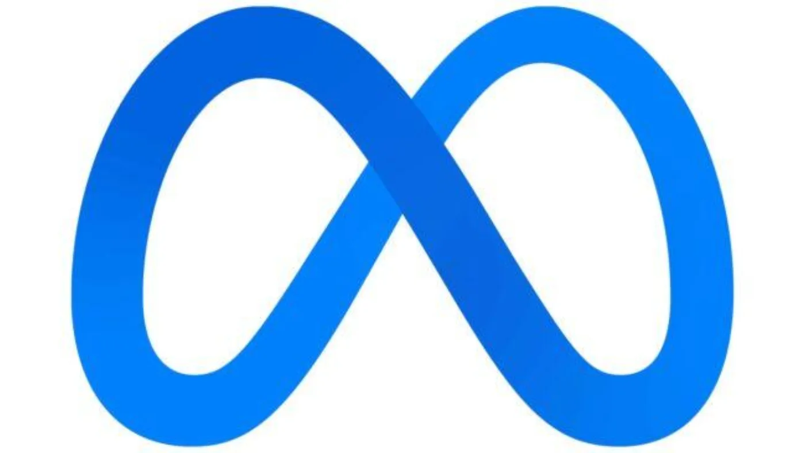

Ce qu'il faut retenir
Ce que l'atelier a montré, et ce que vous pouvez en faire dès demain.
L'IA, ce n'est pas que ChatGPT
IA génératives conversationnelles
Elles produisent du texte. C'est la famille que compar:IA fait s'affronter dans l'arène.
Les autres IA
Elles trient, reconnaissent, prédisent. Elles travaillent depuis longtemps, sans faire parler d'elles.
Pour en découvrir plus : comparia.beta.gouv.fr
Une poignée de fournisseurs
OpenAI
Anthropic
Meta

Ils se partagent le terrain des modèles conversationnels.
Les autres IA travaillent déjà
Traduire

Lire une radiographie

Conduire

Une requête, ce n'est pas grand-chose
À l'échelle, une requête consomme peu.
Mais des milliards de requêtes sur de très grands modèles finissent par consommer énormément.
Regarder deux choses à la fois
Une réponse
Ce que coûte la question que je viens de poser.
Le même geste, partout
Ce que coûterait cette même question, posée par tout le monde, tous les jours.
Ce que le bilan affiche
Bilan de cette discussion ⌄
Texte généré
800 jetonsContexte max : 1 000 k jetonsCoût
0,007 €Tarif standardÉnergie de génération estimée
3 145 mWh▲ ≈ 46,6× plus d'énergie que l'autre modèleValeurs réelles pour Anthropic/Claude Sonnet 5 face à Google/Gemma 4 26B A4B.
Trois échelles de projection
Un sélecteur change l'échelle du bilan.
Cette discussion
Les jetons réellement produits.
Recherche approfondie
310 000 jetons.
Session de code agentique
500 000 jetons.
Les projections ne comptent que les jetons de sortie et supposent une exécution sans cache.
Une classe, de A à F
Pour un million de jetons de sortie.
- A moins de 100 Wh
- B moins de 300 Wh
- C moins de 1 000 Wh
- D moins de 3 000 Wh
- E moins de 10 000 Wh
- F 10 000 Wh et au-delà
Estimation EcoLogits 0.10.2, PUE 1,2, mix électrique mondial moyen.
Les classes de taille
| Classe | Paramètres, en milliards |
|---|---|
| XS | moins de 15 |
| S | de 15 à 60 |
| M | de 60 à 100 |
| L | de 100 à 400 |
| XL | plus de 400 |
Classes de taille compar:IA.
Ouvert ou propriétaire
Modèle ouvert
Il affiche son compte exact, et sa part active s'il fonctionne par mélange d'experts.
Modèle propriétaire
Il n'affiche que sa classe : Taille estimée XL
Les laboratoires propriétaires ne publient pas leur compte de paramètres.
Trois équivalences pour se figurer l'énergie
Streaming vidéo
140 sréférence 80 Wh par heureAmpoule LED
31 minampoule de 6 WBatterie de smartphone
21 %batterie de 15 WhValeurs du produit pour les 3 145 mWh de la diapositive précédente. Ces équivalences sont en énergie, pas en carbone.
Les petits modèles suffisent souvent
Ils consomment moins que les grands, pour des résultats de qualité comparable.
L'onglet Focus énergie du classement place chaque modèle selon son score de satisfaction et sa consommation moyenne pour 1 000 jetons. On y voit des petits modèles bien classés et sobres.
comparia.beta.gouv.fr/ranking. Score de satisfaction Bradley-Terry, calculé sur les votes de l'arène.
Où trouver les petits modèles
HuggingChat
Duck.ai
OpenRouter

Et aussi : le catalogue compar:IA, et Jan.
Catalogue : comparia.beta.gouv.fr/models
Trois conseils pour utiliser l'IA plus sobrement
- Prenez des petits modèles : ils suffisent dans la plupart des cas.
- Pour chercher un fait vérifiable, préférez un moteur de recherche : il renvoie vers une source.
- Servez-vous de compar:IA pour repérer les bons modèles pour vos usages.
L'arène est à la racine du site, comparia.beta.gouv.fr, et le catalogue à comparia.beta.gouv.fr/models
Le moteur de recherche, pour la fiabilité
Le deuxième conseil vaut pour la fiabilité, pas pour l'énergie. Les seuls chiffres mesurés par les fournisseurs (0,24 Wh chez Google, 0,34 Wh chez OpenAI) sont du même ordre que le seul chiffre publié pour une recherche web, 0,3 Wh, qui date de 2009.
Aucun moteur de recherche ne publie de chiffre récent.